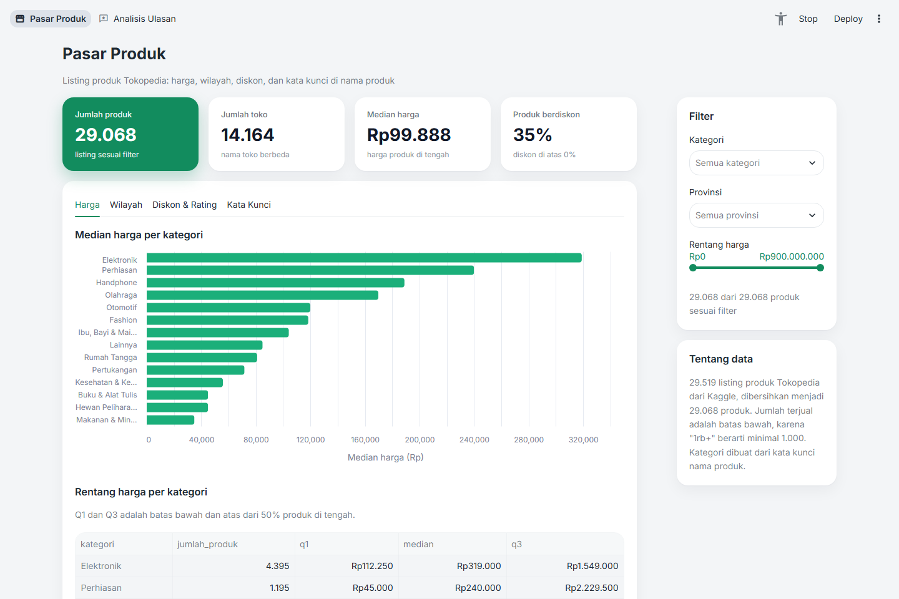
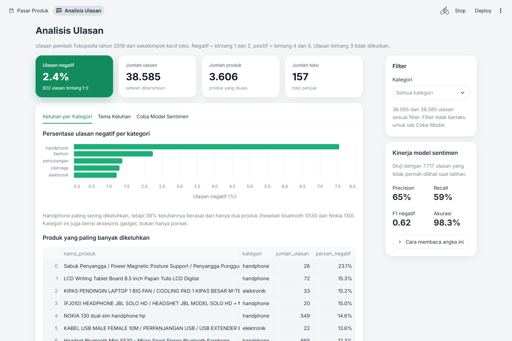

Analisis data · Machine learning
Tokopedia Market Dashboard
Riset pasar Tokopedia dari dua sisi: apa yang dijual penjual (29.519 listing produk) dan apa yang dirasakan pembeli (40.607 ulasan berbahasa Indonesia). Hasilnya berupa delapan notebook analisis, satu model sentimen, dan dashboard dua halaman.
Buka dashboard Lihat kode di GitHub
Dashboard di Streamlit Community Cloud tidur kalau tidak dikunjungi selama 12 jam. Kalau muncul tombol untuk membangunkannya, klik lalu tunggu sekitar satu menit.
- 29.519listing produk
- 40.607ulasan pembeli
- 8notebook analisis
- 0,62F1 keluhan data uji

Masalah
Proyek ini melihat pasar dari sudut pandang calon penjual: di kategori mana harga produk berada, apakah diskon benar-benar membuat produk laris, dan apa yang paling sering dikeluhkan pembeli. Pertanyaan yang dijawab:
- Bagaimana sebaran harga di setiap kategori?
- Kota dan provinsi mana yang punya penjual paling aktif dan penjualan tertinggi?
- Apakah diskon yang lebih besar selalu membuat produk lebih laris?
- Apakah kata seperti "premium" atau "original" di nama produk berkaitan dengan harganya?
- Bisakah ulasan negatif dikenali otomatis dari teksnya?
- Apa yang paling sering dikeluhkan pembeli, dan apakah berbeda antarkategori?
Data
Dua dataset publik dari Kaggle: listing produk Tokopedia (lisensi Apache 2.0) dan ulasan produk Tokopedia tahun 2019 (lisensi MIT). Keduanya berasal dari periode dan sumber berbeda, sehingga tidak bisa digabung per produk dan hanya disandingkan di level kategori.
| Masalah | Contoh | Penanganan |
|---|---|---|
| Jumlah terjual berupa teks dengan belasan format | 1rb+ terjual, 4.95rb+, 1jt+ | Diubah jadi angka. Titik dibaca sebagai ribuan atau desimal sesuai formatnya |
| Tidak ada kolom kategori | Hanya nama produk | Kategori dibuat dari kata kunci nama produk, dengan pencocokan kata utuh |
| Lokasi toko ditulis dalam 322 variasi | 2.834 baris hanya bertuliskan "Indonesia" | Dipetakan ke kota dan provinsi dengan tabel referensi buatan sendiri |
| URL tidak bisa dipakai mendeteksi duplikat | Sekitar 34% hanya link halaman toko | Duplikat tidak dideteksi lewat URL |
| Teks ulasan informal | kode HTML, "baguuus", "tidak" dalam 10 ejaan | Dibersihkan dengan satu fungsi yang dipakai model dan dashboard |
Temuan utama
Rating 5,0 bukan tanda produk terbaik
Rating sempurna lebih sering berarti produk baru punya sedikit pembeli. Median jumlah terjual produk ber-rating 5,0 hanya 16, sedangkan produk ber-rating 4,9 mencapai 500.
Diskon membantu, tetapi diskon besar tidak menjamin laris
Produk berdiskon memang lebih laris (median terjual 100 dibanding 26). Namun dua pertiga produk dengan diskon di atas 50% tetap terjual di bawah 1.000.
"Premium" justru berkaitan dengan harga lebih murah
Kata "premium" di nama produk berkaitan dengan harga di bawah median kategorinya (0,83 kali). Kata "original" dan "official" berkaitan dengan harga 1,35 sampai 1,48 kali median kategori.
Penjual terpusat di Jakarta dan sekitarnya
DKI Jakarta menyumbang 46% toko dan 51% total terjual. Bersama Jawa Barat dan Banten, porsinya sekitar 90%.
Pembeli paling sering mengeluhkan kualitas produk
Kualitas produk disebut di 28% ulasan negatif, dibanding 16% ulasan positif. Pengiriman dan pelayanan penjual justru lebih sering dipuji daripada dikeluhkan. Di kategori handphone, 38% keluhan berasal dari hanya dua produk.
Model sentimen
Hanya 2,4% ulasan yang negatif. Model yang selalu menebak "positif" sudah mendapat akurasi 97,6% tanpa menemukan satu pun keluhan, jadi akurasi tidak bisa dipakai. Model dinilai dari F1 kelas negatif, dan setiap langkah perbaikan diukur dengan cross-validation di data latih:
| Langkah | F1 negatif |
|---|---|
| Selalu menebak positif | 0 |
| TF-IDF (1–2 kata) + Logistic Regression | 0,34 |
Dengan class_weight="balanced" | 0,50 |
| Pengaturan terbaik dari GridSearchCV | 0,58 |
| Ambang keputusan disetel dengan cross-validation | 0,63 |
Di data uji yang hanya dipakai sekali di akhir, model mendapat F1 0,62, precision 65%, dan recall 59%.
Dua model tambahan juga dicoba dan hasilnya dilaporkan apa adanya. Menebak kategori dari teks ulasan hanya mencapai akurasi 41%, dibanding patokan 39%, karena kebanyakan ulasan membahas pengiriman dan penjual, bukan produknya. Menebak bintang 1 sampai 5 juga lemah, karena ulasan bintang 4 dan 5 hampir tidak bisa dibedakan dari teksnya. Kedua hasil ini menjadi alasan model sentimen memakai dua kelas saja.
Dashboard
Pasar Produk berisi filter kategori, provinsi, dan harga, dengan tab harga per kategori, wilayah, diskon dan rating, serta kata kunci di nama produk. Analisis Ulasan berisi keluhan per kategori, tema keluhan, ringkasan kinerja model, dan kotak untuk mencoba model sentimen dengan ulasan sendiri.

Kode pembersihan data hanya ada di satu folder (src). Notebook, pipeline, dan dashboard
memakai fungsi yang sama, dan fungsi-fungsi itu diuji otomatis dengan pytest.
Keterbatasan
- Jumlah terjual adalah batas bawah, karena "1rb+" berarti minimal 1.000.
- Kategori berbasis kata kunci tidak sempurna, dan 11% produk masuk "Lainnya".
- Label sentimen berasal dari rating. Sekitar 4% ulasan bintang 1 dan 2 isinya justru pujian.
- Ulasan berasal dari tahun 2019 dan dari sekitar 160 toko, dengan ulasan negatif yang didominasi kategori handphone.
- Semua data adalah potret satu waktu, sehingga hasilnya menunjukkan hubungan, bukan sebab-akibat.
- Python
- pandas
- scikit-learn
- matplotlib
- Altair
- Streamlit
- pytest